import numpy as np
import pandas as pd
from sklearn.model_selection import train_test_split
from sklearn.ensemble import RandomForestClassifier
from sklearn.tree import DecisionTreeClassifier
data = pd.read_csv('FIFA 2018 Statistics.csv')
y = (data['Man of the Match'] == "Yes") # Convert from string "Yes"/"No" to binary
feature_names = [i for i in data.columns if data[i].dtype in [np.int64]]
X = data[feature_names]
train_X, val_X, train_y, val_y = train_test_split(X, y, random_state=1)
tree_model = DecisionTreeClassifier(random_state=0, max_depth=5, min_samples_split=5).fit(train_X, train_y)
1. Partial Dependence Plots
- Uses
shows how features affect prediction
calculated after the model has been fit
from sklearn import tree
import graphviztree_graph = tree.export_graphviz(tree_model, out_file = None, feature_names = feature_names)
graphviz.Source(tree_graph)from matplotlib import pyplot as plt
from sklearn.inspection import PartialDependenceDisplay
#create plot
disp1 = PartialDependenceDisplay.from_estimator(tree_model, val_X, ['Goal Scored'])
plt.show()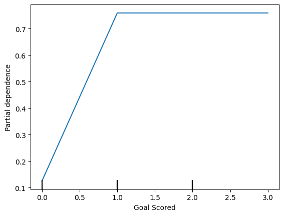
- Inference from graph-
scoring a gaol makes a person ‘Man of the match’
But extra goal seems to have no impact.
feature_to_plot = 'Distance Covered (Kms)'
disp2 = PartialDependenceDisplay.from_estimator (tree_model, val_X, [feature_to_plot])
plt.show()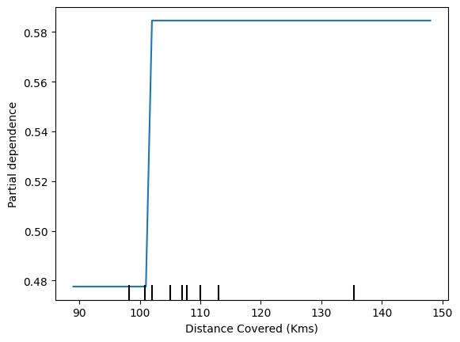
# same plot with Random_forest
rf_model = RandomForestClassifier(random_state = 0).fit(train_X, train_y)
disp3 = PartialDependenceDisplay.from_estimator(rf_model, val_X, [feature_to_plot])
plt.show()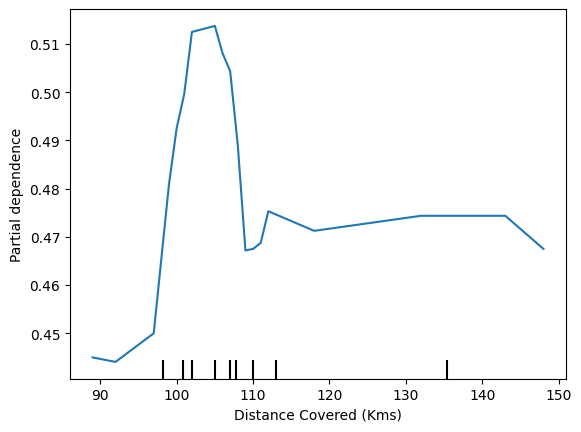
- Inference
The above graphs feature that if a player covers 100 kms, he becomes ‘Man of the match’
1st model- DecisionTreeClassifier
2nd model - RandomForestClassifier
2. 2D Partial Dependence Plots
fig, ax = plt.subplots(figsize = (8,6))
f_names = [{"Goal Scored", "Distance Covered (Kms)"}]
# simiar to previous, except use use tuple features
disp4 = PartialDependenceDisplay.from_estimator(tree_model, val_X, f_names, ax = ax)
plt.show()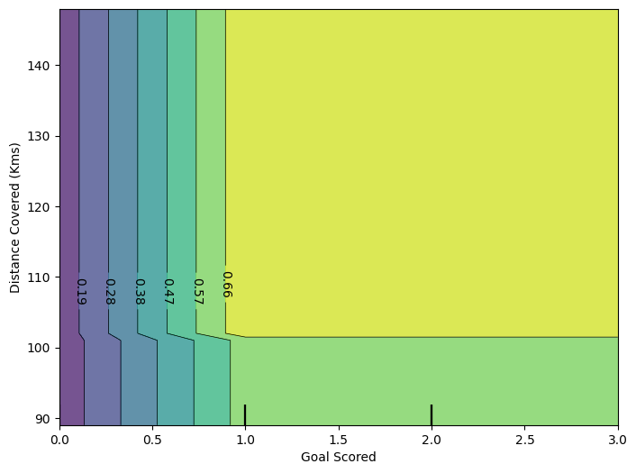
3. Practice exercise
# import libraries
from sklearn.ensemble import RandomForestClassifier
from sklearn.ensemble import RandomForestRegressor
from matplotlib import pyplot as plt
from sklearn.inspection import PartialDependenceDisplay
# load data
data2 = pd.read_csv('train.csv')
# Remove data with extreme outlier coordinates or negative fares
data2 = data2.query('pickup_latitude > 40.7 and pickup_latitude < 40.8 and ' +
'dropoff_latitude > 40.7 and dropoff_latitude < 40.8 and ' +
'pickup_longitude > -74 and pickup_longitude < -73.9 and ' +
'dropoff_longitude > -74 and dropoff_longitude < -73.9 and ' +
'fare_amount > 0'
)
y = data2.fare_amount
base_features = ['pickup_longitude',
'pickup_latitude',
'dropoff_longitude',
'dropoff_latitude']
X = data2[base_features]
# train the model
train_X, val_X, train_y, val_y = train_test_split(X, y, random_state=1)
first_model = RandomForestRegressor(n_estimators=30, random_state=1).fit(train_X, train_y)
print("Data sample:")
data2.head()Data sample:| key | fare_amount | pickup_datetime | pickup_longitude | pickup_latitude | dropoff_longitude | dropoff_latitude | passenger_count | |
|---|---|---|---|---|---|---|---|---|
| 2 | 2011-08-18 00:35:00.00000049 | 5.7 | 2011-08-18 00:35:00 UTC | -73.982738 | 40.761270 | -73.991242 | 40.750562 | 2 |
| 3 | 2012-04-21 04:30:42.0000001 | 7.7 | 2012-04-21 04:30:42 UTC | -73.987130 | 40.733143 | -73.991567 | 40.758092 | 1 |
| 4 | 2010-03-09 07:51:00.000000135 | 5.3 | 2010-03-09 07:51:00 UTC | -73.968095 | 40.768008 | -73.956655 | 40.783762 | 1 |
| 6 | 2012-11-20 20:35:00.0000001 | 7.5 | 2012-11-20 20:35:00 UTC | -73.980002 | 40.751662 | -73.973802 | 40.764842 | 1 |
| 7 | 2012-01-04 17:22:00.00000081 | 16.5 | 2012-01-04 17:22:00 UTC | -73.951300 | 40.774138 | -73.990095 | 40.751048 | 1 |
feature_name = 'pickup_longitude'
PartialDependenceDisplay.from_estimator (first_model, val_X, [feature_name])
plt.show()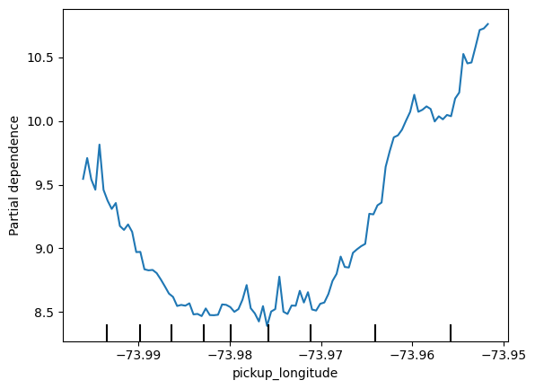
# apply 'for' loop for all base_features
for feature_name in base_features:
PartialDependenceDisplay.from_estimator(first_model, val_X, [feature_name])
plt.show()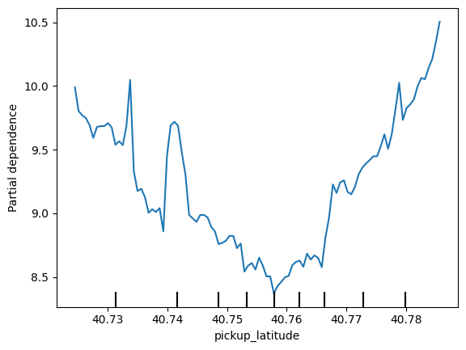
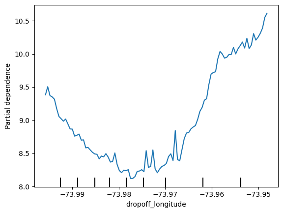
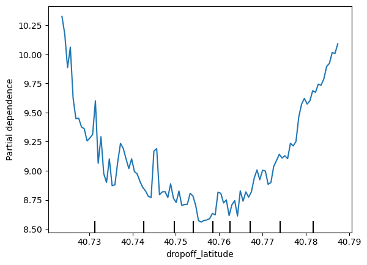
# 2D partial Dependence plots
fig, ax = plt.subplots(figsize = (8, 6))
feature_names = [('pickup_longitude', 'dropoff_longitude')]
PartialDependenceDisplay.from_estimator (first_model, val_X, feature_names, ax= ax)<sklearn.inspection._plot.partial_dependence.PartialDependenceDisplay at 0x1e6ada40650>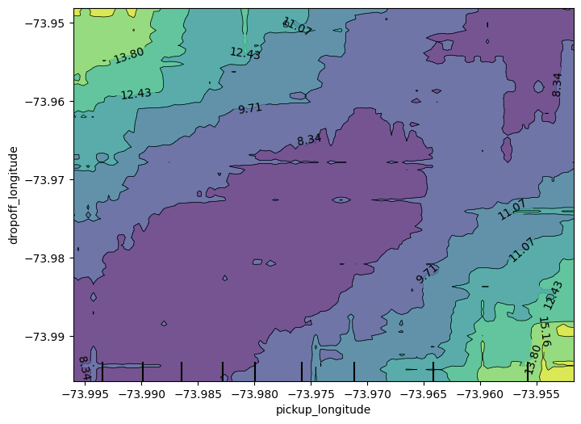
Consider a scenario where you have only 2 predictive features, which we will call feat_A and feat_B.
Both features have minimum values of -1 and maximum values of 1. The partial dependence plot for feat_A increases steeply over its whole range, whereas the partial dependence plot for feature B increases at a slower rate (less steeply) over its whole range.
Does this guarantee that feat_A will have a higher permutation importance than feat_B? Why or why not_
No. This doesn’t guarantee feat_a is more important. For example, feat_a could have a big effect in the cases where it varies, but could have a single value 99% of the time. In that case, permuting feat_a wouldn’t matter much, since most values would be unchanged.
Creates two features, X1 and X2, having random values in the range [-2, 2].
Creates a target variable y, which is always 1.
Trains a RandomForestRegressor model to predict y given X1 and X2.
Creates a PDP plot for X1 and a scatter plot of X1 vs. y.
Do you have a prediction about what the PDP plot will look like?
# import libraries
import numpy as np
from sklearn.ensemble import RandomForestRegressor
from sklearn.inspection import PartialDependenceDisplay
import matplotlib.pyplot as plt
# generate random data
np.random.seed(0) # for reproducibiity
X1 = np.random.uniform(-2, 2, 100)
X2 = np.random.uniform(-2, 2, 100)
X = np.column_stack([X1, X2])
# create target variable y
#y = np.ones([X.shape[0]])
y = -2 * X1 * (X1<-1) + X1 - 2 * X1 * (X1>1) - X2
# train RandomForestRegressor
model = RandomForestRegressor()
model.fit(X,y)
# plot
fix, ax = plt.subplots(figsize =(8, 6))
PartialDependenceDisplay.from_estimator (model, X, features = [0], ax= ax)
ax.set_title('display feature X1')
plt.show()
# Scatter Plot of X1 vs. y
plt.figure(figsize=(8, 6))
plt.scatter(X1, y)
plt.title("Scatter Plot of X1 vs. y")
plt.xlabel("X1")
plt.ylabel("y")
plt.show()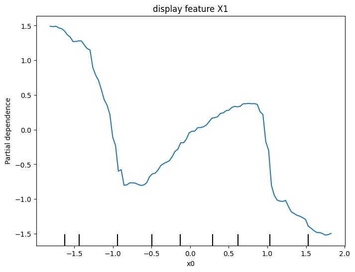
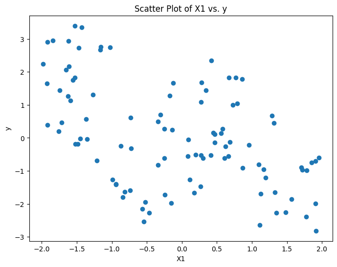